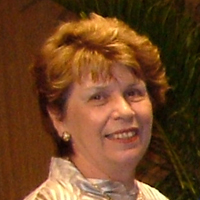
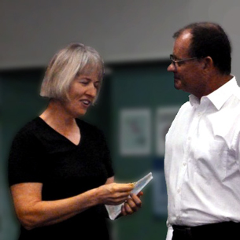

Life Members
Alan Nixon
Life Member

Life Member since May 2015
Alan has been Secretary of North Queensland Ensembles Inc. /Barrier Reef Orchestra for eight years.
He is a former Commonwealth Government officer mainly in the Commonwealth Employment Service and prior to retirement he was the Department's Zone Manager for North Queensland. This expertise has served the Orchestra well as Alan has facilitated North Queensland Ensembles becoming incorporated and was also Secretary at the time when we employed our first Orchestra Manager.
Alan has a background in community service having been a member of both Australian Jaycees and Rotary. He has also had long experience as an actor, producer and Committee member with several little theatre groups across the State.
Carol Dall'Osto
Life Member
Life Member since July 2010
Carol has been a leading figure in music performances in Townsville for many years despite living in Ingham until the early 2000s when she moved to Townsville. Carol is a piano teacher, accompanist, and musical director of the Australian Concerto and Vocal Competition which she has led since 1991.She was involved with the others in the formation of the Barrier Reef Orchestra, and was chairperson of the North Queensland Ensembles Committee (the parent organization for the Orchestra), a position she held until 2003.
David Pearse
Life Member
PHOTO NOT AVAILABLE
Life Member since June 2006
David was heavily involved with the Townsville music scene from the 1970s, including the formation of the BRO in 1999. He was made a Life Member by the Committee in June 2006, when he and his wife Elizabeth left Townsville to live in Canberra.
Donna McMahon
Life Member

Life Member since July 2010
Donna has been a leader in the Townsville music community since she arrived in 1973 fresh from the Conservatorium to teach strings for Education Queensland. Until 2009 she has also been involved with the Townsville Youth Orchestra, the Australian String Teachers’ Association, the Australian Concerto & Vocal Competition, and lately of course the Barrier Reef Orchestra. Apart from being one of the prime movers in the formation of the BRO, she has been performer, rehearsal conductor, musical advisor, & visiting conductor liaison. In 2009, she was rehearsal conductor, played with the orchestra, and managed the music library. She recently graduated with a Masters Degree in Music from James Cook University.
Jacinta Payne
Life Member
Life Member since May 2015
Jacinta has been part of the Orchestra from the beginning when she played 1st Clarinet at the first performance on Sunday, 29th October 2000.
She has been on the management committee and was a voluntary manager of the Orchestra. Jacinta has had the task of being Rehearsal Conductor on many occasions and conducted a performance in 2004.
Over the years, through her teaching she has been able to encourage many players to join the Orchestra and has mentored many young woodwind players.
Jenny Carr
Life Member

Life Member since July 2010
Jenny Carr came to Australia from Scotland in the early 70s and instantly became an integral part of the Townsville music scene as a pianist and instrumental music teacher. In 1998 when the decision was made to establish a community orchestra, Jenny worked as librarian, performer and for many years as Manager . In conjunction with Donna McMahon and Susan Linge (from the Civic Theatre), they arranged a series of concerts for the emerging orchestra. She also played with the orchestra when a pianist was needed. As Manager, she was involved in all aspects of handling the orchestra's music and checking attendances. In later years, Jenny worked as Adjudicator’s Assistant for the Australian Vocal and Concerto Competition.
Stephen Frewen-Lord
Life Member

Life Member since May 2015
Stephen has been involved with the Barrier Reef Orchestra since its inception; having played as concert master in the orchestra’s inaugural concert in 2000. Since then, he has missed only a couple of Barrier Reef Orchestra concerts, and has been concert master for most concerts.
When not rehearsing with the BRO, Stephen is involved in a number of ensembles around Townsville. He manages and plays with the Melaleuca String Quartet, directed Strings Non Troppo, and plays in Double Play – a guitar/violin duo. Stephen has had regular involvement with the Mulkadee Arts Festival, and performs regularly in community events such as Eco Fiesta, Riverfest, Heritage Day and Stable on the Strand.
In his role as concert master over the past 15 years, Stephen has enjoyed many discussions with guest conductors concerning the artistic direction of the orchestra. As a string teacher, he has encouraged many young string players to become regular members of the orchestra. Stephen loves his involvement with the orchestra, and is delighted to be joined by young players who share his passion for music. Stephen is looking forward to passing on the baton to the next BRO concert master!
The Barrier Reef Orchestra Committee
| President | Judy Hunter |
| Vice-President | Ben Fixter |
| Secretary | Lorraine Gray-McConnell |
| Treasurer | Nadine Ziegenfusz |
| Committee | Gay Copeman |
| Alexandra Gorton | |
| Simon McConnell | |
| Helen Land | |
| Marg Naylor | |
| Ron Piper | |
| Noel Price | |
| Andrew Ryder | |
| Billie Saint-Rang | |
| Orchestra Manager | Sally Frewen-Lord |
| Newsletter Editor | Marg Naylor |